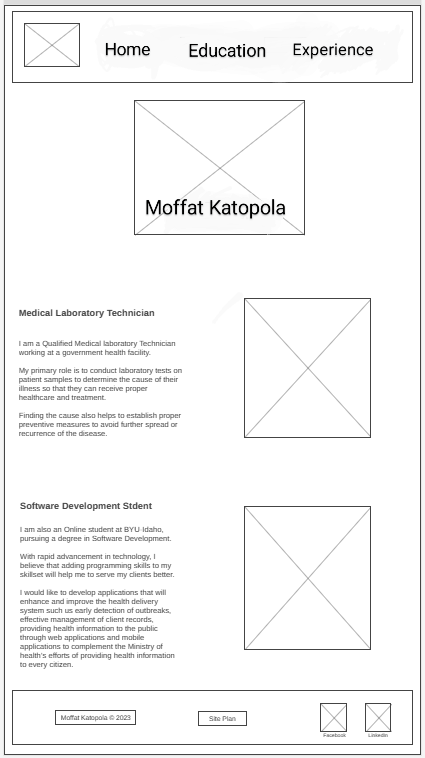

I am a Qualified Medical laboratory Technician working at a government health facility. My primary role is to conduct laboratory tests on patient samples to determine the cause of their illness so that they can receive proper healthcare and treatment. Finding the cause also helps to establish proper preventive measures to avoid further spread or recurrence of the disease.
Colored paragraph example
I am a Qualified Medical laboratory Technician working at a government health facility. My primary role is to conduct laboratory tests on patient samples to determine the cause of their illness so that they can receive proper healthcare and treatment. Finding the cause also helps to establish proper preventive measures to avoid further spread or recurrence of the disease.
Navigation
Site Map
Home
Education
Experience
Content
Home page
About me
I am a Qualified Medical laboratory Technician working at a government health facility. My primary role is to conduct laboratory tests on patient samples to determine the cause of their illness so that they can receive proper healthcare and treatment. Finding the cause also helps to establish proper preventive measures to avoid further spread or recurrence of the disease.
I am also an Online student at BYU-Idaho, pursuing a degree in Software Development. With rapid advancement in technology, I believe that adding programming skills to my skillset will help me to serve my clients better. I would like to develop applications that will enhance and improve the health delivery system such us early detection of outbreaks, effective management of client records, providing health information to the public through web applications and mobile applications to complement the Ministry of health’s efforts of providing health information to every citizen.
Images for the Home page
Education
Biomedical Science
Malawi College of Health Sciences
Specific courses covered: Microbiology, serology, hematology, blood banking, parasitology, biochemistry molecular diagnostics and research methodologies. This also includes practical attachments in major public and private hospitals for hands-on experience and familiarization.
Started in 2016 and graduated in 2020
PathwayConnect
BYU Pathway Worldwide
Specific courses covered: PC101; Life Skills, PC102; Professional Skills, PC103; University Skills and Religion Institute.
Started in January 2023 and finished in July 2023
Software Development
BYU-Idaho
Registered courses: Web Fundamentals, Programming with Functions, Math for the Real World and Devotional – Fall 2023
Started in September 2023 and expecting to finish in 2026
Images for the Page 2
Experience
Adventist Health Services
Intern Medical Laboratory Officer - 2020 – 2021
Collecting samples for analysis
Inspecting samples for any anomalies before testing
Ensuring patient confidentiality
Performing all laboratory procedures according to standards
Performing reagent preparation and equipment maintenance
Inventory management
Maintaining safe and clean working environment
Blantyre Health Office
Medical Laboratory Officer - 2022
Collecting samples for analysis
Inspecting samples for any anomalies before testing
Ensuring patient confidentiality
Performing all laboratory procedures according to standards
Performing reagent preparation and equipment maintenance
Supervising and training internees
Inventory management
Maintaining safe and clean working environment
Laboratory Quality Officer - 2023
Ensuring that the Laboratory Quality Management System is being implemented.
Ensuring that lab team completes all Quality Assurance requirements of the work plan.
Maintaining and regularly reviewing all internal Quality Control records.
Maintain and regularly review the External Quality Assessment results. Daily/Monthly monitoring of all lab documentation and reporting to the Laboratory Manager
Verifying lab data, test results, calibrations and quality control data.
Monitoring sample collection, handling, and transport from wards.
Establishing and maintaining liaison between lab team and lab manager
Ensuring by personal observation that correct lab departments Quality Control checks are being made.
Monitor technical problems and machine malfunctions to help evaluate the overall effectiveness of the laboratory. Implement a back-up plan for testing protocols when available.
Identify potential problems or areas of improvement within the laboratory. These areas should be monitored for frequency, possible causes, corrective action, and improvement.
Reviewing the daily/weekly/monthly maintenance of each machine in the laboratory.
District Laboratory TB Officer
Coordinating Tuberculosis diagnostic activities within Blantyre district
Ensuring that all health facilities within Blantyre have adequate reagents and consumables used for TB diagnosis to ensure that there is no service interruptions
Conducting supportive mentorship visits
Conducting orientation and training to new staff in the TB department
Conducting competency assessment to staff working in the TB department.
Preparing quarterly laboratory TB diagnostic data and reporting to the National Tuberculosis and Leprosy Elimination Program.
Images for the Page 3
Wireframes
Create three wireframes for your site. One for each page and list them here
Home
[Any additional details about home that the wireframe does not make clear]

[Page 2]
[Any additional details about page 2 that the wireframe does not make clear]
[Page 3]
[Any additional details about page 3 that the wireframe does not make clear]